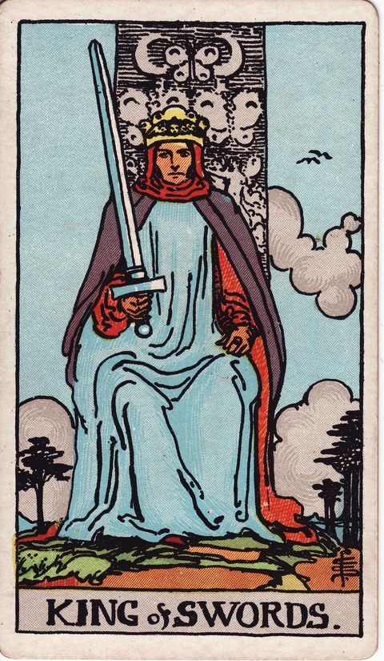

ソードのキングの意味
King of Swords

- 分類ソード
- 象徴風／ソード（思考・判断）／宮廷札：キング（理性・公正）
- 正位置理性・公正・知的な権威
- 逆位置独断・冷酷・権威の濫用
ソードの物語（思考と判断） 宮廷札 キング：外へ向かう成熟と統率
描かれている象徴
玉座に座る王が、剣を立てて正面を見据えています。背後の空には雲や鳥、蝶の意匠。感情に左右されない理性と、公正な判断、知的な権威を表す札です。
正位置の意味
- 理性
- 公正
- 知的な権威
事実とルールに基づいて、筋の通った判断を下せる時です。
進めやすさ：4 / 5（進めやすい）
- 見落としていること
- 論理的に正しくても、感情面の配慮が足りていないのでは。
- 進むときの注意点
- 正論だけで押し切ると、人が離れていきます。
- 本音（本当はどうしたい？）
- 感情も立場も抜いて、純粋に正しいと思う選択は。
- 手放してよいこと
- 「常に冷静で合理的でなければ」という理想像を、そっと脇に置いて。
- 決め手になる違い
- 誰に対しても筋が通り、説明がつく方を基準にすると答えが見えてきます。
逆位置の意味
- 独断
- 冷酷
- 権威の濫用
正しさを盾にして、相手を屈服させていないか点検を。
進めやすさ：2 / 5（いまは整える・見直すが先）
- 見落としていること
- 権威や肩書きを使って、議論を終わらせていないか。
- 進むときの注意点
- 冷酷な判断は、後で自分にも返ってきます。
- 本音（本当はどうしたい？）
- 正しさを求める気持ちの奥に、何を守ろうとしていますか。
- 手放してよいこと
- 「間違いを認めたら負け」という頑なさを、ゆるめてみましょう。
- 決め手になる違い
- 柔軟に見直しができる、風通しの良い方を選んでみて。
決断・迷いにおけるヒント
決断の場面での読み方
ソードのキングは、剣をまっすぐ立て、正面を見据えて玉座に座っています。感情に左右されず、公正な基準で物事を裁く知性と権威の象徴です。決断の場面では、判断の基準を先に決め、それに従って選択肢を評価する方法が有効です。好き嫌いではなく、誰が見ても納得できる理由を言葉にしてみましょう。専門家の意見を取り入れるのもよい選択です。決めたことの理由を説明できれば、迷いは消えていきます。
よくある迷いとの向き合い方
契約や大きな判断など、公平さと論理が求められる場面に心強いカードです。逆位置なら、立場や知識を盾に独断で決めていないか見直しを。正しさを押しつけるより、判断の根拠を共有し、反論を受け付ける姿勢が信頼につながります。
決断前に自分に問いかけたいこと
判断の基準を、選択肢を見る前に決めているか。好き嫌いではなく、誰が見ても納得できる理由を言葉にできるか。専門家の意見を取り入れたか。反論を受け付ける姿勢を保てているか。
「進めやすさ」は、その選択肢を「いま進める」ときの追い風の強さ。運勢の良し悪しではない。